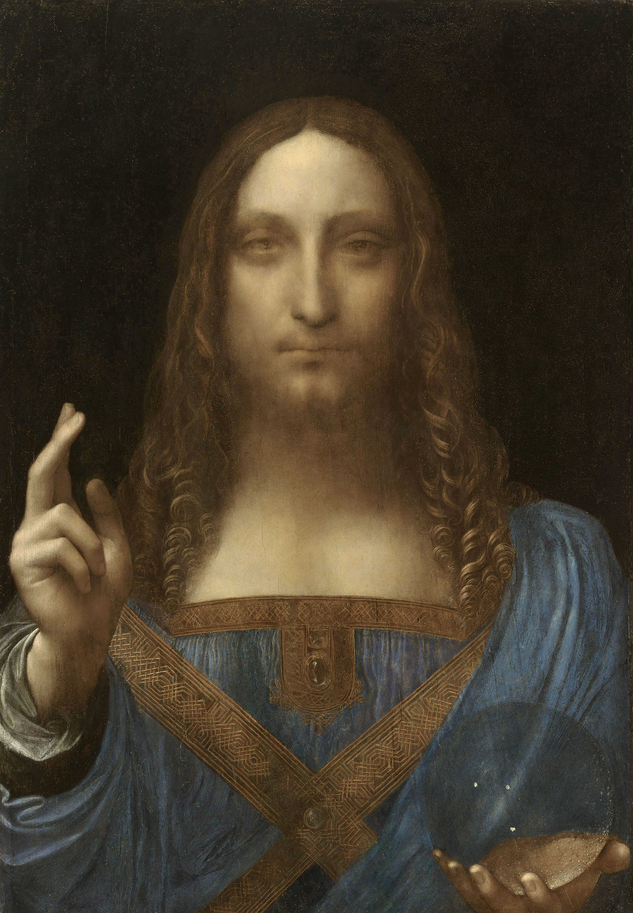
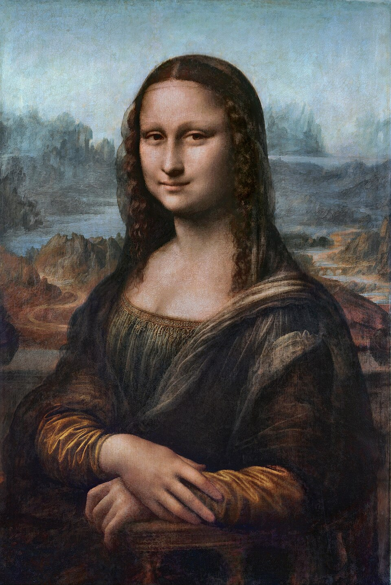

🧠 WICCA_OS://SYS_DIAGNOSTICS_LOG
[X]
⏰ ODA
📅 GÜN
⚡ 7 GÜN
🌙 AY
♀️ 7.9Y
🪐 79Y
🌀 790Y
◀ PAST
• NOW •
FUTURE ▶
🛰️ SYSTEM_READY: Döngü analizörü uyanıyor...
LILITH CORE CONNECTING...
📺
FULLSCREEN
⚙️
SETTINGS
🎚️
CALIBRATE
☽⛤☾
DIAGS
☴
☰
☱
☷
☵
☲
☳
☶

